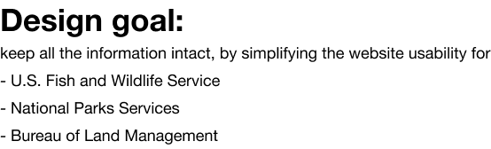
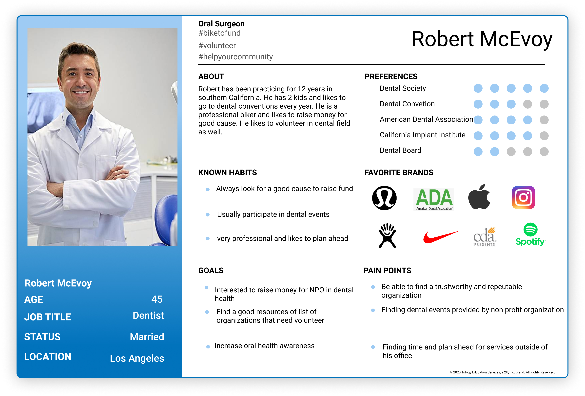
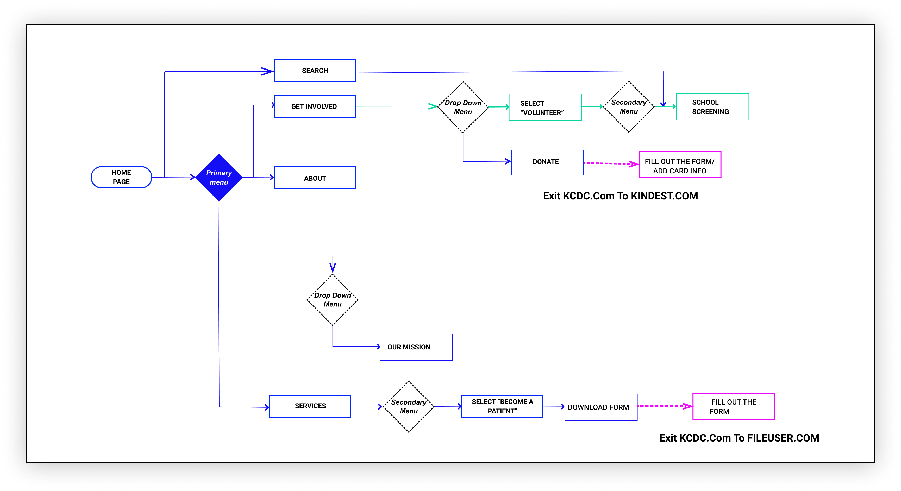
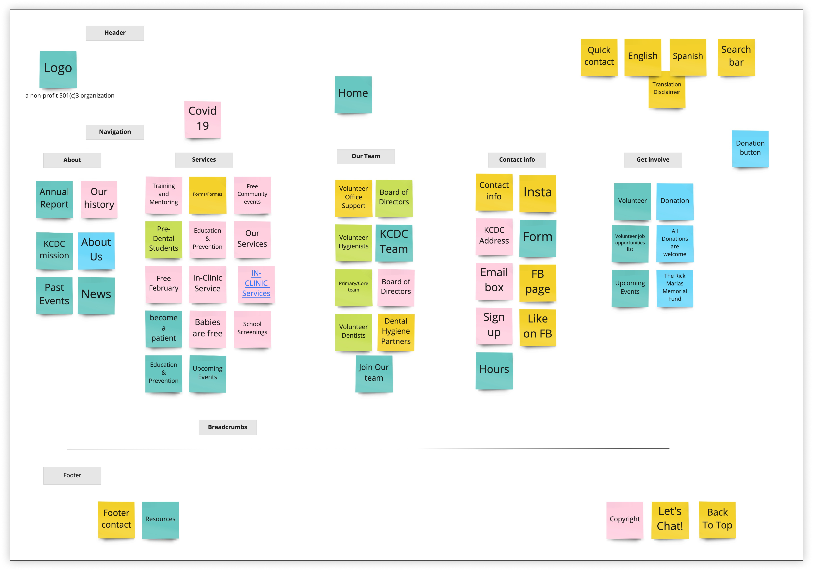
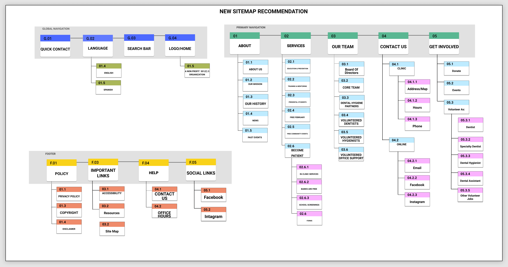
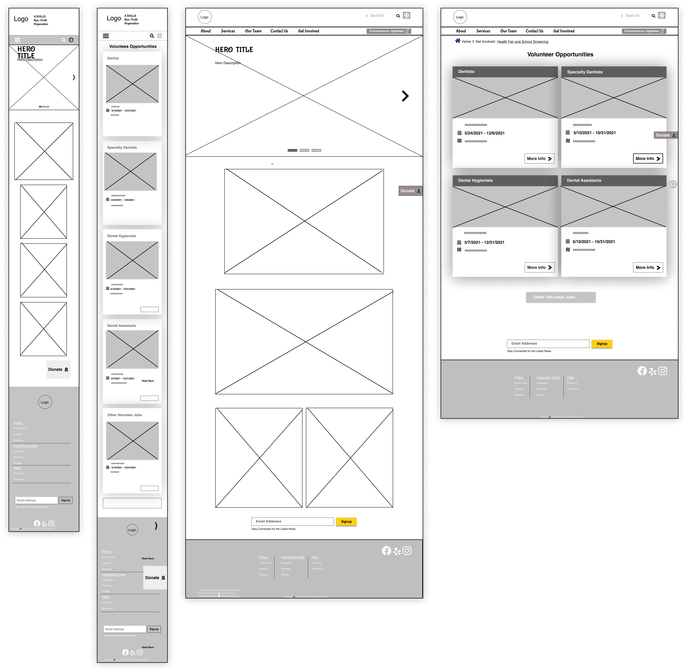
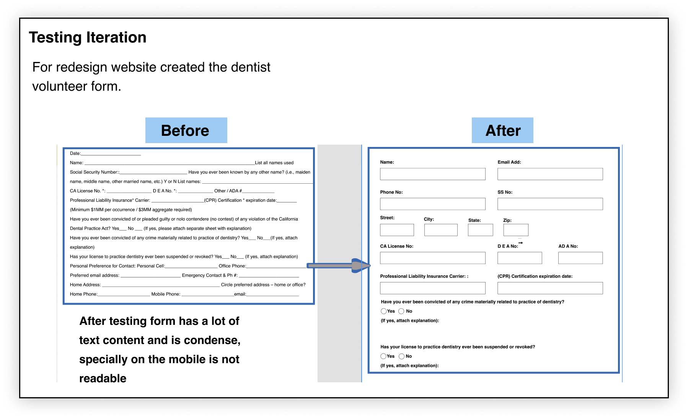
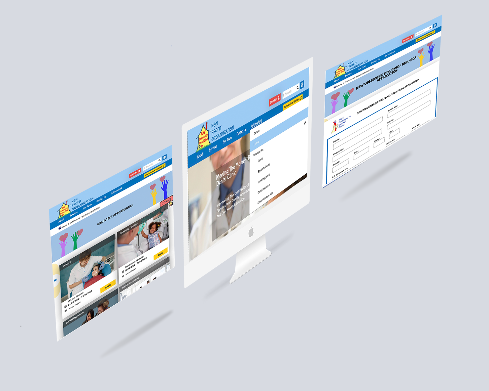
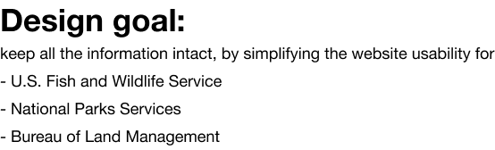
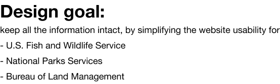

What is the Kids' Community Dental Clinic’s mission?
The Kids' Community Dental Clinic
mission is to improve the oral health of children from low income families with quality procedures, preventative treat-ments, and oral health education.
How might we make the website redesign to increase user trust and understanding in the NPO that enables clear communication of vision and mission in order to engage empathetically to get involved with donations and volunteering?
You can click here to check the Digital interactive prototype.
Project Overview

UX Process
Discover
We conducted Usability Testing and Comparative/Competitive Analyses, developed the User Journey Map on the existing website, and conducted a comprehensive Online Survey to discover the pain points and develop solutions.
Website Analysis
Competitive Analysis
Define
After our research was completed, we came up with a lot of valuable data and we discovered many problems. The next step in our design process is to analyze the data and define the major design problems that should be addressed in our design. Using the data from research, I define the Persona and develop the User Journey and Scenario.
User Persona

Develop
According to what Jade wants:
She finds theatre transformative and makes a point to fit it into her life and full schedule,
She wants a place where she can be both an audience member and a playwright.
User Problem:
In user interviews and testing, we found confusion about the structure of the organization and its donation and volunteer needs.
SOLUTION:
Redesign the Non Profit Organization website to better communicate their mission to their audience for better service as a client and/or as a provider.
User flow

Information Architecture
IA Card Sorting:
We conducted both open and closed card sorting to see how our potential users categorize.
- Break down all of the content on the site.
- Doing this helped us to understand what was necessary to keep, and what was misplaced or redundant.
- Putting more focus on donating and participating more pediatrics dentist will be how we solve our problem statement.

The New Sitemap:
My user’s usability navigation test as well as card sorting resulted in 5 main category of changes in the design of navigation bar and footer listed below:
1- Some new meaningful titles added to simplify the look and bring better structure to the global nav bar.
2- Some titles moved to place in the right category in Footer, global and primary nav bar (Social links).
3-Added social links and subcribe box in the footer.
4- Duplicate items removed.

Design
Wireframes, Iterations, and Testing
Homepage Wireframes

Testing/Iterating
Testing Plan:
Conducted user testing to learn:
1- The stakeholders opinion of our work so far-- good and needs improvement.
2-The users’ first-impression is on the overall design and color harmony.
3-The perceived brand image of the Pegasus Theater.
4-If the site was now easy to understand and navigate through.

Deliver
UI Style Tile, Digital Prototype, UI style Guide, Hi-Fi prototype
Style Guide
Final Design and Implementation

You can click here to check the Digital interactive prototype.
 
